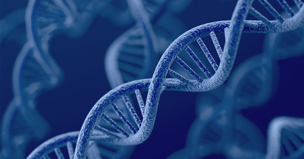

|
GENE LÀ GÌ?
Gen là một đoạn xác định của phân tử acid nucleic có chức năng di truyền nhất định. Trong hầu hết các trường hợp, phân tử acid nucleic này là DNA, rất ít khi là RNA (trường hợp gen là RNA hiện mới chỉ phát hiện ở một số virut).

Thuật ngữ này dịch theo phiên âm kết hợp Việt hoá từ tiếng Anh “gen”, cũng như từ tiếng Pháp “gène” (phát âm Quốc tế đều là /jēn/). Trong sinh học phổ thông cũng viết là gen (đọc là gien hoặc zen). Gen có thể tạo ra sản phẩm của nó, gọi là sản phẩm của gen.
Thuật ngữ "gen" đóng vai trò cơ bản thiết yếu và quan trọng hàng đầu trong di truyền học. Nội hàm của thuật ngữ "gen" đã thay đổi nhiều kể từ khi di truyền học (gentics - tức khoa học về gen) ra đời (từ năm 1900) cho đến thế kỷ XIX hiện nay. Trong sinh học phân tử hiện đại cũng như di truyền học phân tử hiện đại, tính từ đầu năm 2000 đến nay, đã có ít nhất 6 định nghĩa mới về gen. Bài viết này mới chỉ đề cập đến nội hàm của thuật ngữ gen ở thời kỳ mà nhiều nhà nghiên cứu lịch sử di truyền học gọi là "thời kỳ tân cổ điển" của di truyền học (khoảng từ những năm 1940 đến những năm 1970) và ít nhiều đề cập tới nội hàm tương đối mới đến những năm 1980.
Trong quá trình biểu hiện gen, trước tiên DNA được sao chép sang RNA. Phân tử RNA hoặc là có chức năng biệt hóa trực tiếp hoặc làm khuôn mẫu trung gian để tổng hợp nên protein thực hiện một chức năng nào đó. Sự chuyển giao gen đến các sinh vật thế hệ con cháu là cơ sở của tính thừa kế các tính trạng kiểu hình. Các gen tạo thành từ các trình tự DNA khác nhau gọi là kiểu gen. Kiểu gen cùng với các yếu tố môi trường và phát triển xác định lên tính trạng kiểu hình. Đa số các tính trạng sinh học chịu ảnh hưởng bởi nhiều gen (polygen, tức một tính trạng do nhiều gen khác nhau quyết định gọi là tương tác gen) cũng như tương tác giữa gen với môi trường. Một số tính trạng di truyền có thể trông thấy ngay lập tức, ví như màu mắt hoặc số chi và một số khác thì không, như nhóm máu, nguy cơ mắc các bệnh, hoặc hàng nghìn quá trình sinh hóa cơ bản cấu thành sự sống.
Gen có thể thu nạp các đột biến sinh học nằm trong trình tự của chúng, dẫn đến những biến thể, gọi là các allele, trong quần thể. Các allele này mã hóa một số phiên bản hơi khác nhau của cùng một protein, làm biểu hiện tính trạng kiểu hình khác nhau. Việc sử dụng thuật ngữ “gen” (ví dụ như "các gen tốt," "gen màu tóc") thông thường nhắc tới việc bao gồm một allele khác nữa của cùng chung một gen.
Khái niệm gen liên tục được tinh chỉnh để cho phù hợp với những hiện tượng mới khám phá gần đây. Ví dụ, các vùng quy định của một gen có thể nằm rất xa các vùng mã hóa của nó và các vùng mã hóa này có thể xen kẽ bởi các đoạn exon. Một số virus lưu trữ bộ gen của chúng trong RNA thay vì ở DNA và một số sản phẩm gen là những RNA không mã hóa có chức năng chuyên biệt. Do đó, theo nghĩa rộng, định nghĩa khoa học hiện đại về gen là bất cứ đoạn locus di truyền được, đoạn trình tự trong bộ gen ảnh hưởng tới các tính trạng của sinh vật được biểu hiện thành sản phẩm chức năng hoặc tham gia quy định biểu hiện gen.
Thuật ngữ gen do nhà thực vật học, sinh lý học thực vật và di truyền học người Đan Mạch Wilhelm Johannsen giới thiệu năm 1905. Ông lấy gốc từ tiếng Hy Lạp cổ đại: “γόνος, gonos” có nghĩa là thế hệ con cháu và sinh sản.
|
|